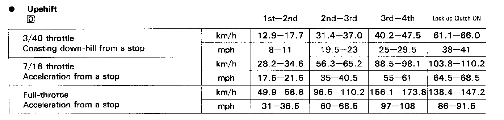
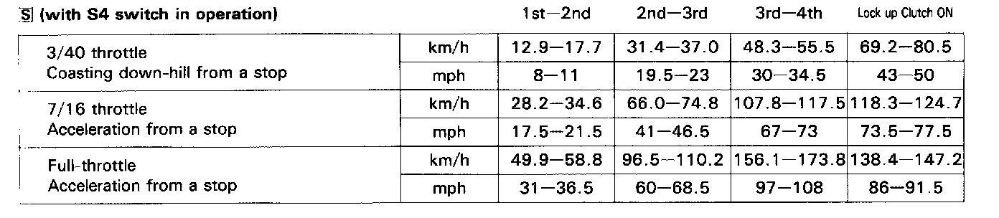
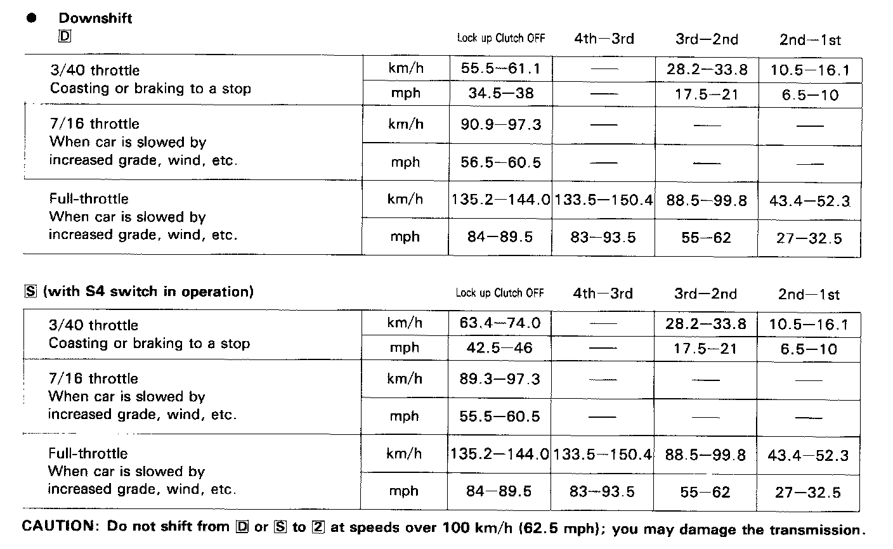

Road Test
NOTE: After transmission is installed:- Make sure the floor mat does not interfere with accelerator pedal travel. Fully depress accelerator pedal and check to make sure the throttle lever is fully opened.
- Release the accelerator pedal and check both inner control cables to be sure they have slight play.
Warm up the engine to operating temperature.
[D] and [S] Range
1. Apply parking brake and block the wheels. Start the engine, then move the selector to [D] while depressing the brake pedal. Depress the accelerator pedal, and release it suddenly. Engine should not stall.
2. Check that shift points occur at approximate speeds shown. Also check for abnormal noise and clutch slippage.
3. Apply parking brake and block the wheels. Start the engine, then move the selector to [S] while depressing the brake pedal. Depress the accelerator pedal, and release it suddenly. Engine should not stall.


- Upshift

- Downshift
[2] (2nd Gear)
1. Accelerate from a stop at full throttle. Check that there is no abnormal noise or clutch slippage.
2. Upshifts and downshifts should not occur with the selector in this range.
[R] (Reverse)
Accelerate from a stop at full throttle, and check for abnormal noise and clutch slippage.
[P] (Park)
Park car on a slope (approx. 16°), apply the parking brake, and shift into Park. Release the brake; the car should not move.